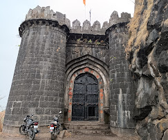
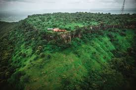
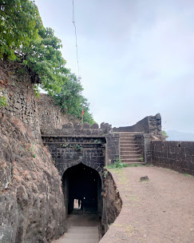

अजिंक्यतारा किल्ला
Location : Click Here For Google Map
- माहिती
- अजिंक्यतारा किल्ला महाराष्ट्र राज्याच्या सातारा जिल्ह्यात स्थित एक ऐतिहासिक किल्ला आहे. या किल्ल्याचा इतिहास मराठा साम्राज्याच्या स्थापनेच्या काळाशी संबंधित आहे. किल्ला सातारा शहराच्या वेसावर, सातारा शहरापासून ३५ किमीच्या अंतरावर वसलेला आहे. किल्ल्याचा महत्व विशेषतः छत्रपती शाहू महाराजांच्या काळात आणि त्यानंतरच्या लढायांमध्ये आहे. किल्ल्यावरून सातारा शहर आणि त्याच्या आजुबाजूच्या डोंगर रांगा तसेच निसर्गरम्य सौंदर्य दिसते.
अजिंक्यतारा किल्ल्याचे स्थापत्य अद्वितीय आहे. किल्ल्याच्या भिंती, बुरुज, दरवाजे आणि विविध संरचनात्मक वैशिष्ट्ये त्याच्या ऐतिहासिक महत्त्वाचे पुरावे आहेत. किल्ल्याच्या शिखरावर, जो एक मजबूत किल्ला म्हणून बांधला गेला होता, सैन्याची तळ किंवा गड म्हणून वापर करण्यात आला होता. किल्ल्यावरून एक अप्रतिम दृश्य दिसते, ज्यामुळे किल्ला पर्यटकांसाठी एक आकर्षक स्थळ बनला आहे.
आजकाल, अजिंक्यतारा किल्ला पर्यटकांसाठी एक महत्त्वाचे ऐतिहासिक स्थल आहे. किल्ल्याच्या ऐतिहासिकतेच्या आणि निसर्ग सौंदर्याच्या मिलाफामुळे, याच्या आसपास अनेक पर्यटक आकर्षित होतात. किल्ल्याच्या शिखरावर चढून त्याच्या ऐतिहासिकतेचा अनुभव घेणे एक रोमांचक अनुभव आहे.
Explore the historical beauty


